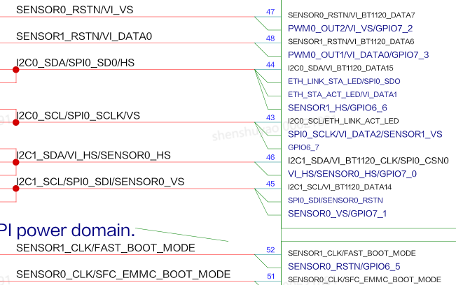

前言
前言
本文为使用MPP媒体处理芯片进行开发的工程师而写，目的是供您在开发过程中查阅媒体处理软件SYS_CONFIG子模块的各种参考信息，包括系统控制、时钟配置、管脚复用等。本文档描述SYS_CONFIG中的各个关键函数的使用方法，以及相关的配置原理。
与本文档相对应的产品版本如下。
本文档（本指南）主要适用于以下工程师：
- 技术支持工程师
- 软件开发工程师
在本文中可能出现下列标志，它们所代表的含义如下。


概述
SYS_CONFIG介绍
SYS_CONFIG是进行系统级和板级进行配置的模块，主要作用是在系统加载sys_config.ko时候，对不需要动态修改的初始化环境做配置。包括以下几个部分：
- 初始化
- 系统控制
- 时钟复位配置
- 管脚复用
SYS_CONFIG以二进制文件形式的ko和源码形式同时进行发布，源码位于interdrv/sysconfig目录。
如需修改SYS_CONFIG代码，可以参照以下文档和步骤（以Hi3516CV610为例）：
- 如需修改时钟配置和系统控制，请先参考芯片手册，再修改sysconfig代码。
- 如需修改管脚复用配置，请先参考芯片手册和《Hi3516CV610xDMEB_VER_x_SCH.pdf》，再修改sysconfig代码。
根据连接的视频输入的sensor不同，系统控制和芯片管脚复用配置存在差异，可以通过模块参数g_sensor_list来进行区分。
比如：
insmod sys_config.ko sensors=sns0=XXX, sns1=XXX（“XXX”表示具体sensor名称）, ir_auto=0
各模块参数意义如表1所示。
表 1 各模块参数意义
用户可以根据以下实际物理环境，修改SYS_CONFIG模块源代码文件中的相关内容：
- 根据实际系统配置修改相应的系统配置;
- 根据实际系统运行时钟需要修改相应的时钟；
- 根据实际物理电路管脚使用布置情况修改管脚复用的相关内容。
修改完成后，编译和加载模块ko，即可以完成所需新的用户环境的配置。
SYS_CONFIG配置流程如图1所示。

包括以下4个流程：
-
初始化（sysconfig_init）
对配置寄存器的地址进行映射，主要寄存器地址包括CRG、系统控制、MISC、IO管脚复用、GPIO控制、MIPI等。
-
系统控制（sys_ctl）
对系统控制部分进行配置，如对VI和VPSS的在线离线模式QoS设置。
-
时钟复位配置（clk_cfg）
配置VI、ISP模块的时钟。
-
管脚复用配置（pin_mux）
根据不同应用场景配置管脚复用为不同的功能。
初始化
SYS_CONFIG的初始化对需要配置的寄存器地址进行ioremap映射，得到软件可以操作配置的虚拟地址。
以下为SYS_CONFIG的初始化进行映射的寄存器地址。
表 1 MSIC寄存器地址
表 2 时钟复位寄存器地址
表 3 管脚复用寄存器地址
表 4 GPIO寄存器地址
表 5 SYS寄存器地址
表 6 DDR寄存器地址
本章节对寄存器地址的映射是其他章节的寄存器配置的基础，在完成本章节寄存器物理地址（即寄存器地址）映射后得到寄存器虚拟地址，通过寄存器虚拟地址可完成对相应寄存器的读写。
操作函数如下：
#define sys_writel(addr, offset, value) ((*((volatile unsigned int *)((uintptr_t)(addr) + (offset)))) = (value))
#define sys_readl(addr, offset) (*((volatile int *)((uintptr_t)(addr) + (offset))))
- sys_writel是写函数，addr表示寄存器起始虚拟地址，offset表示寄存器偏移地址，value表示写入寄存器的值。
- sys_readl是读函数，addr表示寄存器起始虚拟地址，offset表示寄存器偏移地址。操作的结果即为读取到的寄存器的值。
系统控制
VI VPSS在线离线模式
根据VI VPSS在线离线模式情况，需要选择VI VPSS在线离线模式。
VI VPSS在线离线模式配置
【配置】
g_reg_misc_base 见表1.
static void set_vi_online_video_norm_vpss_online_qos(void)
{
void *misc_base = sys_config_get_reg_misc();
sys_writel(misc_base, 0x0300, 0x55477705);
sys_writel(misc_base, 0x0304, 0x70057054);
sys_writel(misc_base, 0x0308, 0x44404447);
sys_writel(misc_base, 0x0310, 0x66477706);
sys_writel(misc_base, 0x0314, 0x70057054);
sys_writel(misc_base, 0x0318, 0x55505547);
}
【描述说明】
MDDRC_QOS_CTRL0为QOS寄存器。
Offset Address: 0x4300 Total Reset Value: 0x0000_0000
配置值为0x55477705：
- Bits[30:28]=0x5，表示CPU INSTR写通道QOS配置为5。
- Bits[26:24]=0x5，表示CPU DATA写通道QOS配置为5。
- Bits[22:20]=0x4，表示CORESIGHT写通道QOS配置为4。
- Bits[18:16]=0x7，表示VPSS写通道QOS配置为7。
- Bits[14:12]=0x7，表示VIPROC写通道QOS配置为7。
- Bits[10:8]=0x7，表示VICAP写通道QOS配置为7。
- Bits[6:4]=0x0，表示DDRT写通道QOS配置为0。
- Bits[2:0]=0x5，表示VEDU写通道QOS配置为5。
【注意事项】
无。
时钟复位配置
时钟是各模块正常运行的基础，以下说明时钟相关配置。
时钟复位配置函数如下（函数具体实现以实际应用场景为准）：
在Hi3516CV610-10B中，若需要接入WDR时序，可通过修改clk_cfg.h文件下的HI3516CV610_10B_WDR 值以提高接入VICAP相关频点和ISP0相关频点。
VI 时钟复位配置
VICAP时钟
【配置】
g_reg_crg_base 见表2。
【描述说明】
PERI_CRG9296为VICAP时钟及复位控制寄存器，参考芯片手册。
Offset Address: 0x9140 Total Reset Value: 0x0000_0001
配置值为0x6003：
- Bits[14:12]=0x7，表示时钟配置为475MHz；
- Bits[5:4]=0x0，表示关闭VICAP时钟门控，时钟门控由驱动控制开关。
- Bits[0]=0x1，表示复位状态。
【注意事项】
- 工作时钟必须大于SENSOR的时钟。
- 工作时钟必须大于等于PORT、ISP时钟。
- Hi3516CV610-10B默认VICAP频点和ISP0频点为198MHz，若需要对接WDR模式，需要提高频点，设置HI3516CV610_10B_WDR为非0值。
PORT口时钟
【配置】（以PORT0配置为例）
g_reg_crg_base 见表2。
【描述说明】
PERI_CRG9305为VICAP PORT0时钟及复位控制寄存器。
Offset Address: 0x9164 Total Reset Value: 0x0000_0000
配置值为0x7001: Bits[14:12]=0x7，表示PORT口时钟配置为475MHz。
【注意事项】
Hi3516CV610-10B默认VICAP频点和ISP0频点为198MHz，若需要对接WDR模式，需要提高频点，设置HI3516CV610_10B_WDR为非0值。
CMOS时钟
【配置】
g_reg_crg_base 见表2。
【描述说明】
PERI_CRG9304为VI CMOS0时钟反向配置寄存器。
Offset Address: 0x9160 Total Reset Value: 0x0000_0000
配置值为0x0：Bits[20]=0x0，表示VI CMOS时钟相位不取反。
【注意事项】
无。
SENSOR时钟
【配置】（以SENSOR0配置为例）
g_reg_crg_base 见表2。
static void sensor_clock_config(int index, unsigned int clock)
{
int offset = 0x8440;
offset += index * (0x20); /* sensor0 - 1 */
sys_writel(g_reg_crg_base + offset, clock); /* sensor clock: 0xA001 */
}
【描述说明】
sysconfig通过解析模块参数传入的sensor号和sensor名称解析对应的寄存器地址和配置的值，比如模块参数sensors=sns0=HY006-3814-0011时，解析出index=0，clock=0xA001，计算的sensor0的offset=0x8440。以SENSOR0时钟复位配置寄存器为例进行详细说明。
PERI_CRG8464为SENSOR0时钟复位配置寄存器。
Offset Address: 0x8440 Total Reset Value: 0x0000_0000
配置值为0xA001：Bits[15:12]=0xA，表示SENSOR0时钟配置为27MHz；时钟门控通过MIPI_RX驱动打开。
【注意事项】
无。
VIPROC时钟
【配置】
g_reg_crg_base 见表2。
【描述说明】
PERI_CRG9680为VIPROC时钟及复位控制寄存器。
Offset Address: 0x9740 Total Reset Value: 0x0000_0000
配置值为0x4001：
- Bits[14:12]=0x4, 表示时钟配置为264MHz；
- Bits[4]=0x0，表示关闭VIPROC时钟门控。
- Bits[0]=0x1，表示VIPROC复位状态。
【注意事项】
Hi3516CV610-10B默认VIPROC频点为198MHz，若需要对接WDR模式，需要提高频点，设置HI3516CV610_10B_WDR为非0值。
管脚复用
管脚复用是芯片在有限的输出管脚中，为满足不同场景需要，灵活使用管脚资源，在不同场景中输出管脚实现不同用途。
I2C总线管脚复用
I2C总线一般用于配置外设芯片，在外设驱动中通常使用I2C接口对外设芯片进行配置。因此需要在SYS_CONFIG 中配置相应的管脚复用为I2C管脚。
I2C管脚复用
【配置】
g_reg_iocfg2_base 见表3。
I2C0:
static void i2c0_pin_mux(void)
{
void *iocfg2_base = sys_config_get_reg_iocfg2();
sys_writel(iocfg2_base, 0x0098, 0x1135);
sys_writel(iocfg2_base, 0x0034, 0x1135);
}
I2C1:
static void i2c1_pin_mux(void)
{
void *iocfg2_base = sys_config_get_reg_iocfg2();
sys_writel(iocfg2_base, 0x0028, 0x1175);
sys_writel(iocfg2_base, 0x0024, 0x1135);
}
【描述说明】
以I2C0为例，I2C原理图如图1所示，参考硬件原理图《Hi3516CV610DMEB_VER_X_SCH.pdf》

I2C0需要I2C0_SCL(时钟)/ I2C0_SDA(数据)2根管脚。以下对2根管脚的管脚复用进行描述。
时钟管脚配置（43）
时钟管脚配置（43）， 寄存器：0x1794009c，详细参考《XXXX_PINOUT_CN.xlsx》。
表 1 43管脚控制寄存器
管脚存在6种复用情形：I2C0_SCL、GPIO6_7等。
43配置值为0x1135：
- Bits[3:0]=0x5，管脚复用为5，管脚复用配置为I2C0_SCL;
- Bits[7:4]=0x3，管脚管脚驱动能力配置为档位1，档位值越大，对应的驱动能力越大;
- Bits[8]=0x1，打开管脚上拉控制。
- Bits[10]=0x0，管脚电平转换速率控制配置为快沿输出。
DATA管脚配置（44）
DATA管脚配置（44），寄存器：0x17940098，详细参考《XXXX_PINOUT_CN.xlsx》。
表 1 44 管脚控制寄存器
管脚存在8种复用情形：GPIO6_6、I2C0_SDA等。
44配置值为0x1135：
- Bits[3:0]=0x5，管脚复用为5，管脚复用配置为I2C0_SDA;
- Bits[7:4]=0x3，管脚管脚驱动能力配置为档位1，档位值越大，对应的驱动能力越大;
- Bits[8]=0x1，打开管脚上拉控制。
- Bits[13]=0x0，管脚电平转换速率控制配置为快沿输出。
【注意事项】
无。
VI管脚复用
视频输入是通过BT.656/BT.1120/MIPI接口接收视频数据，按照一定的视频接收协议进行视频数据的采集，并将数据存入指定的内存区域。
以下对VICAP中的管脚复用进行说明。
PORT口管脚复用
MIPI_RX管脚复用
【配置】
g_reg_iocfg2_base 见表3。
以Hi3516CV610的MIPI_RX的PHY0接口为例：
static void mipi0_rx_pin_mux(void)
{
void *iocfg2_base = sys_config_get_reg_iocfg2();
sys_writel(iocfg2_base, 0x0000, 0x1430); /* MIPI_RX0_CK1N */
sys_writel(iocfg2_base, 0x0004, 0x1430); /* MIPI_RX0_CK1P */
sys_writel(iocfg2_base, 0x0008, 0x1430); /* MIPI_RX0_D3N */
sys_writel(iocfg2_base, 0x000C, 0x1430); /* MIPI_RX0_D3P */
sys_writel(iocfg2_base, 0x0010, 0x1430); /* MIPI_RX0_D1N */
sys_writel(iocfg2_base, 0x0014, 0x1430); /* MIPI_RX0_D1P */
sys_writel(iocfg2_base, 0x0018, 0x1430); /* MIPI_RX0_CK0N */
sys_writel(iocfg2_base, 0x001C, 0x1430); /* MIPI_RX0_CK0P */
sys_writel(iocfg2_base, 0x0020, 0x1430); /* MIPI_RX0_D0N */
sys_writel(iocfg2_base, 0x0024, 0x1430); /* MIPI_RX0_D0P */
sys_writel(iocfg2_base, 0x0028, 0x1430); /* MIPI_RX0_D2N */
sys_writel(iocfg2_base, 0x002C, 0x1430); /* MIPI_RX0_D2P */
}
【描述说明】
原理图如图1所示，具体请参考硬件设计原理图《HI3516CV610QDMEB_2024-03-01.pdf》

当VI视频采集接口为MIPI_RX接口采集时，需要配置图1中对应的10根管脚为对应的MIPI_RX的相关功能，MIPI接口的10根管脚分为1对时钟线和4对DATA数据线，1对管脚为1对差分信号。
-
时钟管脚配置（以PIN60复用为MIPI_RX_CK0N为例说明），具体请参考《XXXX_PINOUT_CN.xlsx》
表 1 PIN60管脚控制寄存器
Pin MIPI_RX_CK0N IO Config Register.
（该管脚配置为MIPI_RX功能时，该bit应同时配置为0x0。）
管脚存在4种复用情形：MIPI_RX_CK0N、GPIO5_0等。
配置值为0x0000:Bits[3:0]=0，管脚复用为0，配置复用为MIPI_RX_CK0N。
-
DATA管脚配置（以PIN57复用为MIPI_RX_D0N为例说明），参考《XXXX_PINOUT_CN.xlsx》。
表 2 PIN57管脚控制寄存器
Pin MIPI_RX_D0N IO Config Register.
（该管脚配置为MIPI_RX功能时，该bit应同时配置为0x0。）
管脚存在4种复用情形：MIPI_RX_D0N 、GPIO5_2等。
配置值为0x0000:
Bits[3:0]=0，管脚复用为0，配置复用为MIPI_RX_D0N。
其他管脚复用关系配置和以上示例管脚配置情况类似，在此不做详细描述详细描述。
【注意事项】
无。
BT.656管脚复用
【配置】
以设备1的BT.656接口为例。
g_reg_iocfg_base 见表3。
static void vi_bt656_mode_mux(void)
{
void *iocfg2_base = sys_config_get_reg_iocfg2();
sys_writel(iocfg2_base, 0x0018, 0x1632); /* VI_DATA0 */
sys_writel(iocfg2_base, 0x001c, 0x1206); /* VI_DATA1 */
sys_writel(iocfg2_base, 0x0020, 0x1206); /* VI_DATA2 */
sys_writel(iocfg2_base, 0x0024, 0x1206); /* VI_DATA3 */
sys_writel(iocfg2_base, 0x0028, 0x1206); /* VI_DATA4 */
sys_writel(iocfg2_base, 0x002c, 0x1206); /* VI_DATA5 */
sys_writel(iocfg2_base, 0x0088, 0x1631); /* VI_DATA6 */
sys_writel(iocfg2_base, 0x008c, 0x1631); /* VI_DATA7 */
sys_writel(iocfg2_base, 0x0090, 0x1671); /* VI_CLK */
}
【描述说明】
原理图如图1所示，具体请参考硬件设计原理图《Hi3516CV610_DMEB_VER_A_SCH.pdf》

当VI视频采集接口为BT.656接口采集时，需要配置上图中对应的10根管脚为对应的BT.656的相关功能，BT.656接口的10根管脚包含有时钟管脚和8根DATA（VI_DATA0~ VI_DATA7）数据管脚。
- 时钟管脚配置（以46复用为VI_CLK为例说明）：
表 1 PIN46管脚控制寄存器
管脚存在6种复用情形： GPIO7_0/VI_BT1120_CLK/SPI0_CSN0/I2C1_SDA/VI_HS/SENSOR0_HS
配置值为0x1671:Bits[3:0]=0x1，管脚复用为1，配置复用为VI_BT1120_CLK。
DATA管脚配置：
VI_DATA0~VI_DATA7为对应的BT.656接口的相关功能。
以AB14复用为VI_DATA0为例进行说明。
表 2 PIN60管脚控制寄存器
MIPI_RX_CK0N/GPIO5_0/VI_BT1120_DATA0/VI_DATA5/VI_CLK/ I2C0_SDA。
配置值为0x1632:Bits[3:0]=0x2，管脚复用为6，配置复用为VI_BT1120_DATA0
其他管脚复用关系配置和以上示例管脚配置情况类似，在此不做详细描述。
【注意事项】
无。
BT.1120管脚复用
BT.1120接口由时钟管脚（VI_CLK）和16根数据管脚（VI_DATA0~VI_DATA15）组成。
【配置】
g_reg_iocfg_base 见表3。
static void vi_bt1120_mode_mux(void)
{
void *iocfg2_base = sys_config_get_reg_iocfg2();
sys_writel(iocfg2_base, 0x0000, 0x1632); /* VI_DATA8 */
sys_writel(iocfg2_base, 0x0004, 0x1632); /* VI_DATA9 */
sys_writel(iocfg2_base, 0x0008, 0x1632); /* VI_DATA10 */
sys_writel(iocfg2_base, 0x000c, 0x1632); /* VI_DATA11 */
sys_writel(iocfg2_base, 0x0010, 0x1632); /* VI_DATA12 */
sys_writel(iocfg2_base, 0x0014, 0x1632); /* VI_DATA13 */
sys_writel(iocfg2_base, 0x0018, 0x1632); /* VI_DATA0 */
sys_writel(iocfg2_base, 0x001c, 0x1206); /* VI_DATA1 */
sys_writel(iocfg2_base, 0x0020, 0x1206); /* VI_DATA2 */
sys_writel(iocfg2_base, 0x0024, 0x1206); /* VI_DATA3 */
sys_writel(iocfg2_base, 0x0028, 0x1206); /* VI_DATA4 */
sys_writel(iocfg2_base, 0x002c, 0x1206); /* VI_DATA5 */
sys_writel(iocfg2_base, 0x0088, 0x1631); /* VI_DATA6 */
sys_writel(iocfg2_base, 0x008c, 0x1631); /* VI_DATA7 */
sys_writel(iocfg2_base, 0x0090, 0x1671); /* VI_CLK */
sys_writel(iocfg2_base, 0x0094, 0x1631); /* VI_DATA14 */
sys_writel(iocfg2_base, 0x0098, 0x1631); /* VI_DATA15 */
}
【描述说明】
原理图如图1所示，具体参考硬件设计原理图《Hi3516CV610DMEB_VER_X_SCH.pdf》

当VI视频采集接口为BT.1120接口采集时，需要配置上图中对应的管脚为对应的BT.1120的相关功能，BT.1120接口的管脚分为时钟管脚和16根DATA（VI_DATA0~ VI_DATA15）管脚。
时钟管脚配置与数据管脚配置与BT656类似，不做重复阐述。
【注意事项】
Hi3516CV610只有1个BT.656接口，在配置BT.1120接口时，除了配置BT.656为相关功能外(VI_DATA0~DATA7)，需要另外配置8根管脚为VI_DATA8~DATA15为相关功能。
SENSOR参考时钟管脚
SENSOR管脚用于连接外接SENSOR，主芯片提供参考时钟给SENSOR使用。
【配置】
g_reg_iocfg_base 见表3。
SENSOR0-1:
static void sensor0_pin_mux(void)
{
void *iocfg2_base = sys_config_get_reg_iocfg2();
sys_writel(iocfg2_base, 0x0084, 0x1211); /* SENSOR0_CLK */
sys_writel(iocfg2_base, 0x008C, 0x1135); /* SENSOR0_RSTN */
}
static void sensor1_pin_mux(void)
{
void *iocfg2_base = sys_config_get_reg_iocfg2();
sys_writel(iocfg2_base, 0x0080, 0x1211); /* SENSOR1_CLK */
sys_writel(iocfg2_base, 0x0088, 0x1135); /* SENSOR1_RSTN */
}
【描述说明】
参考硬件设计原理图《HI3516CV610QDMEB_2024-03-01.pdf》，SENSOR0_CLK（PIN51），SENSOR0_RSTN（PIN47）原理如图1所示。

以PIN51管脚的复用关系配置为例进行描述，参考《XXXX_PINOUT.xlsx》“管脚控制寄存器”页，SENSOR0_CLK（PIN51）管脚控制寄存器如表1所示。
表 1 PIN51管脚控制寄存器
PIN51存在4种功能复用：TEST_CLK/ SENSOR0_CLK/ GPIO6_4等
PIN51管脚配置：0x1211
- Bits[3:0]=1，表示PIN51复用为SENSOR0_CLK
- Bits[7:4]=2，表示选择驱动能力档位14
- Bits[9:8]=2，表示管脚下拉控制：打开
- Bits[10]=0，管脚电平转换速率控制配置为快沿输出
【注意事项】
无。
Audio管脚复用
AIAO模块对接外置CODEC时，需要使能I2S相关的管脚复用。AIAO模块对接内置CODEC时，需要使能功放芯片的GPIO管脚复用，用于解除静音。
I2S管脚复用
【配置】（以Hi3516CV610的I2S为例）
static void i2s0_pin_mux(void)
{
void *iocfg_base = sys_config_get_reg_iocfg();
sys_writel(iocfg_base + 0x0048, 0x1523); /* I2S0_SD_RX */
sys_writel(iocfg_base + 0x0044, 0x1663); /* I2S0_WS */
sys_writel(iocfg_base + 0x0040, 0x1523); /* I2S0_BCLK */
sys_writel(iocfg_base + 0x003c, 0x1523); /* I2S0_SD_TX */
sys_writel(iocfg_base + 0x0038, 0x1523); /* I2S0_MCLK */
}
【描述说明】
I2S原理图如图1所示。

以I2S0_MCLK为例，对应芯片管脚编号为25 (寄存器：0x11130038)，参考《XXXX_PINOUT_CN.xlsx》。
表 1 PIN25管脚控制寄存器
管脚存在下述复用情形：GPIO7_7 / SDIO1_CDATA2 / I2S_MCLK/ UART1_RTSN / SPI1_SDO / PWM1_OUT0。
25配置值为0x00001523：
- Bits[3:0]=0x3表示管脚功能选择为I2S_MCLK；
- Bits[7:4]=0x2表示管脚驱动能力配置为档位2，档位值越大，对应的驱动能力越大；
- Bits[9:8]=0x1表示管脚上拉控制打开, 下拉控制关闭，结合实际电路配置；
- Bits[10]=0x1表示电平转换速率为慢沿输出。
【注意事项】
无。
功放GPIO管脚复用
【配置】（以Hi3516CV610为例）
static void amp_unmute_pin_mux(void)
{
void * iocfg_base = sys_config_get_reg_iocfg();
void * gpio_base = sys_config_get_reg_gpio();
/* GPIO1_4 */
sys_writel(iocfg_base + 0x0004, 0x1200);
/* output high */
sys_writel(gpio_base + 0x1400, 0x10);
sys_writel(gpio_base + 0x1040, 0x10);
}
【描述说明】
功放芯片的使能通过GPIO1_4管脚进行控制，原理图如图1所示，参考硬件原理图《Hi3516CV610xDMEB_VER_x_SCH.pdf》。

功放芯片使能控制的具体配置为：
- GPIO1_4管脚对应芯片管脚编号为29 (寄存器：0x11130004)，参考《XXXX_PINOUT_CN.xlsx》。
表 1 PIN29管脚控制寄存器
管脚存在下述复用情形：GPIO1_4 / I2C1_SCL / PWM0_OUT3 / UART2_TXD / LSADC_CH0。
29配置值为0x00001200：
- Bits[3:0]=0x0表示管脚功能选择为GPIO1_4；
- Bits[7:4]=0x0表示管脚驱动能力配置为档位4，档位值越大，对应的驱动能力越大；
- Bits[9:8]=0x2表示管脚下拉控制打开，结合实际电路配置；
- Bits[10]=0x0表示电平转换速率为快沿输出。
GPIO_DIR为GPIO方向控制寄存器，配置寄存器0x11091400的Bits [7:0]为0x10，表示配置GPIO1_4为输出方向。
Offset Address: 400 Total Reset Value: 0x00
GPIO_DATA为GPIO数据寄存器，配置寄存器0x11091040的Bits [7:0]为0x10，表示配置GPIO1_4为输出高电平。
Offset Address: 0x000～0x3FC Total Reset Value: 0x00
当GPIO配置为输入模式时，为GPIO输入数据；当GPIO配置为输出模式时，为输出数据。各比特均可独立控制。与GPIO_DIR配合使用。 |
【注意事项】
无。
IR_AUTO管脚复用
IR_CUT GPIO管脚复用
【配置】
IR_CUT在不同单板使用不同管脚:
QFN单板IR_CUT使用管脚GPIO7_7/GPIO1_0/GPIO1_2/GPIO1_3
BGA单板IR_CUT使用管脚GPIO1_1/GPIO7_6/GPIO7_7/GPIO1_0
QFN单板配置：
g_reg_crg_base3 见表3
sys_writel(iocfg3_base, 0x0038, 0x1100); /* GPIO7_7 */
sys_writel(iocfg3_base, 0x003c, 0x1100); /* GPIO1_0 */
sys_writel(iocfg3_base, 0x0040, 0x1100); /* GPIO1_2 */
sys_writel(iocfg3_base, 0x0044, 0x1202); /* GPIO1_3 */
BGA单板配置：
sys_writel(iocfg3_base, 0x0048, 0x1100); /* GPIO1_1 */
sys_writel(iocfg3_base, 0x004c, 0x1100); /* GPIO7_6 */
sys_writel(iocfg3_base, 0x0040, 0x1100); /* GPIO1_2 */
sys_writel(iocfg3_base, 0x0044, 0x1202); /* GPIO1_3 */
【描述说明】
IR_CUT通过GPIO7_7/GPIO1_0/GPIO1_2/GPIO1_3/GPIO1_1/GPIO7_6管脚进行控制，原理图如图1所示，参考硬件原理图《Hi3516CV610xDMEB_VER_x_SCH.pdf》。

IR_CUT控制的具体配置为：
- GPIO7_7管脚对应芯片管脚编号为25 (寄存器：0x11130038)，参考《XXXX_PINOUT_CN.xlsx》。
表 1 PIN25 管脚控制寄存器
-
管脚25存在下述复用情形：GPIO7_7/SDIO1_CDATA2/I2S_MCLK/UART1_RTSN/SPI1_SDO/PWM1_OUT0
管脚25配置值为0x1100：
- Bits[3:0]=0x0表示管脚功能选择为GPIO7_7；
- Bits[7:4]=0x0表示管脚驱动能力配置为档位4，档位值越大，对应的驱动能力越大；
- Bits[9:8]=0x1表示管脚上拉控制打开，结合实际电路配置；
- Bits[10]=0x0表示电平转换速率为快沿输出。
-
GPIO1_0管脚对应芯片管脚编号为24 (寄存器：0x1113003c)，参考《XXXX_PINOUT_CN.xlsx》。
表 2 PIN24 管脚控制寄存器
-
管脚24存在下述复用情形：GPIO1_0/SDIO1_CDATA3/I2S_SD_TX/UART1_CTSN/SPI1_SDI/PWM1_OUT1
管脚24配置值为0x1100：
- Bits[3:0]=0x0表示管脚功能选择为GPIO1_0；
- Bits[7:4]=0x0表示管脚驱动能力配置为档位4，档位值越大，对应的驱动能力越大；
- Bits[9:8]=0x1表示管脚上拉控制打开，结合实际电路配置；
- Bits[10]=0x0表示电平转换速率为快沿输出。
-
GPIO1_2管脚对应芯片管脚编号为23 (寄存器：0x11130040)，参考《XXXX_PINOUT_CN.xlsx》。
表 3 PIN23 管脚控制寄存器
-
管脚23存在下述复用情形：GPIO1_2/SDIO1_CCMD/I2S_BCLK/SENSOR1_RSTN/SPI1_CSN/PWM1_OUT2
管脚23配置值为0x1100：
- Bits[3:0]=0x0表示管脚功能选择为GPIO1_2；
- Bits[7:4]=0x0表示管脚驱动能力配置为档位4，档位值越大，对应的驱动能力越大；
- Bits[9:8]=0x1表示管脚上拉控制打开，结合实际电路配置；
- Bits[10]=0x0表示电平转换速率为快沿输出。
-
GPIO1_3管脚对应芯片管脚编号为22 (寄存器：0x11130044)，参考《XXXX_PINOUT_CN.xlsx》。
表 4 PIN22 管脚控制寄存器
-
管脚22存在下述复用情形：JTAG_TCK/SDIO1_CCLK_OUT/GPIO1_3/I2S_WS/SPI1_SCLK/PWM1_OUT3
管脚22配置值为0x1202：
- Bits[3:0]=0x2表示管脚功能选择为GPIO1_3；
- Bits[7:4]=0x0表示管脚驱动能力配置为档位4，档位值越大，对应的驱动能力越大；
- Bits[9:8]=0x2表示管脚上拉控制打开，结合实际电路配置；
- Bits[10]=0x0表示电平转换速率为快沿输出。
-
GPIO1_1管脚对应芯片管脚编号为21 (寄存器：0x11130048)，参考《XXXX_PINOUT_CN.xlsx》。
表 5 PIN21 管脚控制寄存器
-
管脚21存在下述复用情形：GPIO1_1/SDIO1_CDATA0/I2S_SD_RX/UART2_RXD/SPI0_SDO/PWM1_OUT4
管脚21配置值为0x1100：
- Bits[3:0]=0x0表示管脚功能选择为GPIO1_1；
- Bits[7:4]=0x0表示管脚驱动能力配置为档位4，档位值越大，对应的驱动能力越大；
- Bits[9:8]=0x1表示管脚上拉控制打开，结合实际电路配置；
- Bits[10]=0x0表示电平转换速率为快沿输出。
-
GPIO7_6管脚对应芯片管脚编号为20 (寄存器：0x1113004c)，参考《XXXX_PINOUT_CN.xlsx》。
表 6 PIN20 管脚控制寄存器
-
管脚20存在下述复用情形：GPIO7_6/SDIO1_CDATA1/UART2_TXD/SPI0_SDI/PWM1_OUT5
管脚20配置值为0x1100：
- Bits[3:0]=0x0表示管脚功能选择为GPIO7_6；
- Bits[7:4]=0x0表示管脚驱动能力配置为档位4，档位值越大，对应的驱动能力越大；
- Bits[9:8]=0x1表示管脚上拉控制打开，结合实际电路配置；
- Bits[10]=0x0表示电平转换速率为快沿输出。
【注意事项】
- IR_CUT需要使用GPIO7_7/GPIO1_0/GPIO1_2/GPIO1_3/GPIO1_1/GPIO7_6，与SDIO1等功能互斥，详见上述管脚复用情形。
- 若要同时使用上述功能，需要更改硬件管脚设计，并更改SYS_CONFIG中IR_AUTO相关管脚复用配置（寄存器地址以及配置值）。
其他
无。